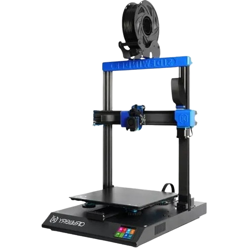
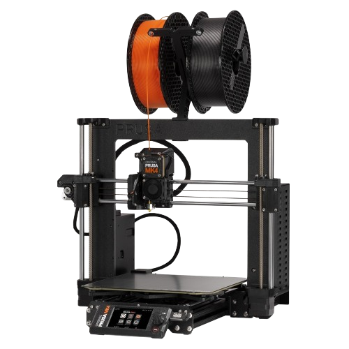
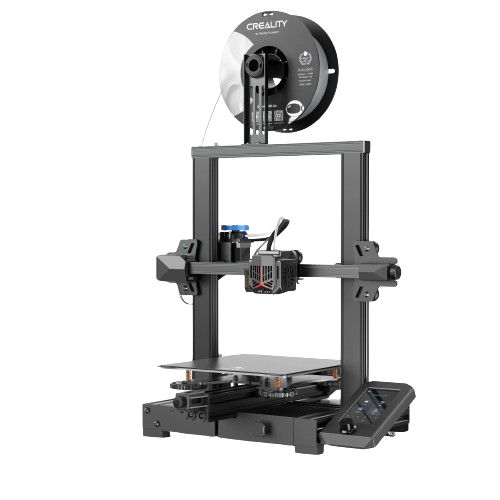

¿Quiénes somos?

Ángel Luis Sánchez Bottois
José Lanchas Rodriguez
Ángel Luis Sánchez Bottois
José Lanchas Rodriguez
La impresión 3D es como una máquina mágica que convierte ideas digitales en objetos reales, capa por capa, usando materiales como plástico o metal. Es como si una impresora normal, en lugar de tinta, usara algo más sólido para crear cosas tridimensionales. Básicamente, puedes "imprimir" desde juguetes hasta piezas de avión.
Artillery Sidewinder X2
Destinada a impresiones de gran tamaño.
Prusa MK4
Nuestra mejor impresora, acabados de altísima calidad.
Creality Ender 3 V2
Una impresora versátil, con buenos acabados y velocidad.